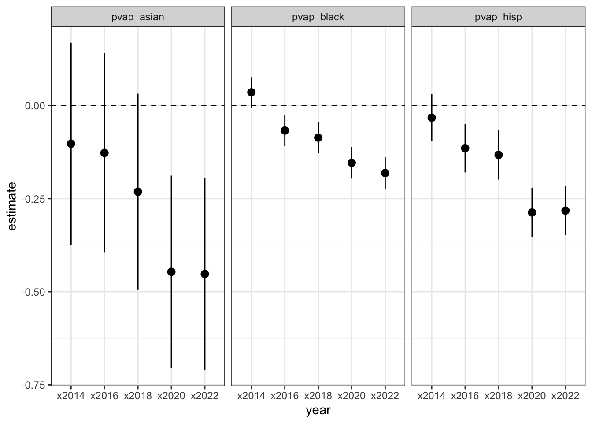

Show the code
library(tidyverse)
library(gt)
library(broom)
library(gtsummary)
knitr::opts_chunk$set(warning = FALSE, message = FALSE)
orig.wec <- read_csv(here::here("election-data/OriginalWEC_Pres-GOV_2012-2022_ReportingUnits.csv"))Once we have demographic statistics and election statistics for the same geographic level, we can combine them to run various analyses.
Here is a simple example, calculating the relative performance of the Democratic candidate in gubernatorial and presidential election in City of Milwaukee wards. I present the results separately for wards where the majority of adults are Black, non-Hispanic white, Hispanic or Latino, etc.
The elections file contains the official election results for each reporting unit in each election year. My analysis is limited to just the City of Milwaukee, where each reporting unit is one ward and wards stayed the same from 2012-2020. Their boundaries then changed to accomodate redistricting in 2022.
See the file election-data/official-wec/CombineFiles.R for a demonstration of how to clean and combine official WEC ward returns.
# A tibble: 1,977 × 6
ward year office total rep dem
<dbl> <dbl> <chr> <dbl> <dbl> <dbl>
1 1 2012 president 1489 297 1185
2 2 2012 president 523 23 500
3 3 2012 president 1138 229 909
4 4 2012 president 1868 275 1576
5 5 2012 president 917 125 789
6 6 2012 president 1875 462 1395
7 7 2012 president 679 194 480
8 8 2012 president 1553 371 1172
9 9 2012 president 857 126 725
10 10 2012 president 1278 346 926
# … with 1,967 more rowsNext, I retrieve the ward statistics for voting age population by race/ethnicity. See the chapter on “Ward Demographics” for details about calculating this. There are two Milwaukee ward demographic files, one containing statistics for the 2011 ward vintage, and the other containing the 2022 ward vintage.
I combine the two into a single dataframe in long format. There is 1 row for each unique combination of ward, year, and demographic group. The following abbreviations are used:
# city of milwaukee ward demographics, wards used from 2012-2020
mke.2011ward.demographics <- read_csv(here::here("data/ward-demographics/Wards2011_VAP_2010to2020.csv")) %>%
filter(str_detect(ward_2011, "^Milwaukee - C")) %>%
pivot_longer(cols = -c(1:2), names_to = "year", values_to = "count") %>%
mutate(year = as.numeric(str_sub(year, -4, -1)),
ward = as.numeric(word(ward_2011, -1))) %>%
select(ward, year, group, count) %>%
group_by(ward, year) %>%
mutate(pct = (count/count[group == "vap"])*100) %>%
ungroup()
# city of milwaukee ward demographics, wards used from 2022-
mke.2022ward.demographics <- read_csv(here::here("data/ward-demographics/Wards2022_VAP_2020.csv")) %>%
filter(str_detect(ward_2022, "^Milwaukee - C")) %>%
# set year to 2022, as this is the election year these wards apply to
mutate(year = 2022,
ward = as.numeric(word(ward_2022, -1))) %>%
rename(count = count_2020) %>%
select(ward, year, group, count) %>%
group_by(ward, year) %>%
mutate(pct = (count/count[group == "vap"])*100) %>%
ungroup()
mke.combined.ward.demographics <- bind_rows(mke.2011ward.demographics,
mke.2022ward.demographics) %>%
arrange(ward, year, group)
mke.combined.ward.demographics# A tibble: 20,718 × 5
ward year group count pct
<dbl> <dbl> <chr> <dbl> <dbl>
1 1 2010 vap 2604 100
2 1 2010 vap_aian 6 0.230
3 1 2010 vap_asian 120 4.61
4 1 2010 vap_black 1138 43.7
5 1 2010 vap_hisp 426 16.4
6 1 2010 vap_nhpi 0 0
7 1 2010 vap_other 4 0.154
8 1 2010 vap_two 50 1.92
9 1 2010 vap_white 860 33.0
10 1 2012 vap 2583 100
# … with 20,708 more rowsI then determine which group, if any, makes up at outright majority of the ward’s voting age population in that year.
mke.ward.majority <- mke.combined.ward.demographics %>%
filter(group != "vap") %>%
group_by(year, ward) %>%
slice_max(order_by = count, n = 1, with_ties = F) %>%
ungroup() %>%
mutate(vap_majority = if_else(pct > 50,
true = word(group, -1, sep = "_"),
false = "no majority")) %>%
select(ward, year, vap_majority)
mke.ward.majority# A tibble: 2,302 × 3
ward year vap_majority
<dbl> <dbl> <chr>
1 1 2010 no majority
2 2 2010 black
3 3 2010 black
4 4 2010 black
5 5 2010 black
6 6 2010 no majority
7 7 2010 no majority
8 8 2010 black
9 9 2010 black
10 10 2010 no majority
# … with 2,292 more rowsThen, I merge the ward majority dataframe with the election results dataframe, and aggregate the votes by majority group.
mke.ward.majority.totals <- mke.ward.votes %>%
inner_join(mke.ward.majority) %>%
group_by(year, office, vap_majority) %>%
summarise(wards = n(),
across(.cols = where(is.numeric), .fns = sum)) %>%
ungroup() %>%
mutate(dem_pct_2pty = (dem/(rep + dem))*100) %>%
filter(total > 0)
mke.ward.majority.totals# A tibble: 31 × 9
year office vap_majority wards ward total rep dem dem_pct_2pty
<dbl> <chr> <chr> <int> <dbl> <dbl> <dbl> <dbl> <dbl>
1 2012 president asian 1 171 230 10 218 95.6
2 2012 president black 136 12679 123308 7429 115406 94.0
3 2012 president hisp 44 11056 20122 2861 17117 85.7
4 2012 president no majority 26 3598 21584 3968 17377 81.4
5 2012 president white 118 25487 122143 42419 77692 64.7
6 2014 governor asian 1 171 110 3 106 97.2
7 2014 governor black 138 12541 90805 7211 82923 92.0
8 2014 governor hisp 45 11340 11902 2453 9277 79.1
9 2014 governor no majority 26 4055 14127 3370 10574 75.8
10 2014 governor white 115 24884 88390 33619 53455 61.4
# … with 21 more rowsFinally, I use the {{gt}} package to create a nicely formatted table of results.
mke.ward.majority.totals %>%
mutate(office_year = paste(year, office)) %>%
select(office_year, vap_majority, wards, dem_share = dem_pct_2pty) %>%
pivot_wider(names_from = vap_majority, values_from = c(dem_share, wards),
names_glue = "{vap_majority}:{.value}") %>%
select(office_year, starts_with("black"), starts_with("white"), starts_with("hisp"),
starts_with("no majority"), starts_with("asian")) %>%
gt(rowname_col = "office_year") %>%
tab_spanner_delim(":") %>%
fmt_percent(columns = contains("dem_share"), decimals = 0, scale = F) %>%
data_color(columns = contains("dem_share"),
domain = c(min(mke.ward.majority.totals$dem_pct_2pty),
max(mke.ward.majority.totals$dem_pct_2pty)),
palette = "Blues") %>%
tab_header(title = "Election results in City of Milwaukee wards",
subtitle = "by the racial/ethnic majority group of adults in each ward") %>%
tab_footnote("Democratic candidate's share of the two-party vote",
locations = cells_column_labels(contains("dem_share"))) %>%
tab_footnote("2012-2018 ward population statistics are linearly interpolated using 2010 and 2020 census data. 2020 and 2022 statistics both use 2020 census data.",
locations = cells_column_labels(contains("wards"))) %>%
tab_footnote("The wards used in 2022 were different than the wards used from 2012-2020.",
locations = cells_stub(rows = 6))| Election results in City of Milwaukee wards | ||||||||||
| by the racial/ethnic majority group of adults in each ward | ||||||||||
| black | white | hisp | no majority | asian | ||||||
|---|---|---|---|---|---|---|---|---|---|---|
| dem_share1 | wards2 | dem_share1 | wards2 | dem_share1 | wards2 | dem_share1 | wards2 | dem_share1 | wards2 | |
| 2012 president | 94% | 136 | 65% | 118 | 86% | 44 | 81% | 26 | 96% | 1 |
| 2014 governor | 92% | 138 | 61% | 115 | 79% | 45 | 76% | 26 | 97% | 1 |
| 2016 president | 93% | 141 | 69% | 110 | 83% | 46 | 79% | 27 | 96% | 1 |
| 2018 governor | 92% | 142 | 70% | 109 | 83% | 46 | 79% | 27 | 97% | 1 |
| 2020 president | 91% | 143 | 71% | 106 | 78% | 46 | 76% | 28 | 75% | 1 |
| 2022 governor3 | 92% | 144 | 75% | 119 | 81% | 43 | 78% | 37 | 90% | 1 |
| 1 Democratic candidate's share of the two-party vote | ||||||||||
| 2 2012-2018 ward population statistics are linearly interpolated using 2010 and 2020 census data. 2020 and 2022 statistics both use 2020 census data. | ||||||||||
| 3 The wards used in 2022 were different than the wards used from 2012-2020. | ||||||||||
Extrapolating individual voter behavior from the table above risks committing the ecological fallacy. To better measure how demographics correlate with election results, I construct a regression model.
Overall, the model confirms the correlations revealed in the simple ward majority table. Keep reading for more details.
First, I prepare the data, so that I am left with 1 row per ward in each election. I have variables for the total number of voters, the Democratic candidate’s share of the 2-party vote, and the proportion of adults made up by each race. I create a combined other category containing all adults who aren’t Black, white, Hispanic/Latino, or Asian. I also add dummy variables for each election year beginning in 2014.
wards.votes.vap.pct <- mke.combined.ward.demographics %>%
select(-pct) %>%
pivot_wider(names_from = group, values_from = count) %>%
mutate(vap_other2 = vap_other + vap_two + vap_aian + vap_nhpi) %>%
inner_join(mke.ward.votes) %>%
select(ward, year, office, total, dem, rep, vap, vap_black, vap_white,
vap_hisp, vap_asian, vap_other2) %>%
# calculate percentages
mutate(total_2party = dem + rep,
pdem = (dem/total_2party)*100,
pvap_black = (vap_black/vap)*100,
pvap_white = (vap_white/vap)*100,
pvap_hisp = (vap_hisp/vap)*100,
pvap_asian = (vap_asian/vap)*100,
pvap_other2 = (vap_other2/vap)*100) %>%
select(ward, year, office, total_2party, vap, starts_with("p")) %>%
# add dummy variables for each election, 2014-2022
mutate(x2014 = if_else(year == 2014, 1, 0),
x2016 = if_else(year == 2016, 1, 0),
x2018 = if_else(year == 2018, 1, 0),
x2020 = if_else(year == 2020, 1, 0),
x2022 = if_else(year == 2022, 1, 0)) %>%
# remove ward-years with either no votes or no adults
filter(!is.na(pdem),
vap > 0)
glimpse(wards.votes.vap.pct)Rows: 1,962
Columns: 16
$ ward <dbl> 1, 1, 1, 1, 1, 1, 2, 2, 2, 2, 2, 2, 3, 3, 3, 3, 3, 3, 4, …
$ year <dbl> 2012, 2014, 2016, 2018, 2020, 2022, 2012, 2014, 2016, 201…
$ office <chr> "president", "governor", "president", "governor", "presid…
$ total_2party <dbl> 1482, 971, 1157, 1000, 1164, 756, 523, 297, 391, 273, 352…
$ vap <dbl> 2583.0, 2562.0, 2541.0, 2520.0, 2499.0, 2499.0, 869.4, 87…
$ pdem <dbl> 79.95951, 76.93100, 80.81245, 80.80000, 83.67698, 82.6719…
$ pvap_black <dbl> 47.27062, 50.89774, 54.58481, 58.33333, 62.14486, 62.1448…
$ pvap_white <dbl> 29.910956, 26.744731, 23.526171, 20.253968, 16.926771, 16…
$ pvap_hisp <dbl> 15.842044, 15.316159, 14.781582, 14.238095, 13.685474, 13…
$ pvap_asian <dbl> 4.5063879, 4.4028103, 4.2975207, 4.1904762, 4.0816327, 4.…
$ pvap_other2 <dbl> 2.469996, 2.638564, 2.809917, 2.984127, 3.161265, 3.16126…
$ x2014 <dbl> 0, 1, 0, 0, 0, 0, 0, 1, 0, 0, 0, 0, 0, 1, 0, 0, 0, 0, 0, …
$ x2016 <dbl> 0, 0, 1, 0, 0, 0, 0, 0, 1, 0, 0, 0, 0, 0, 1, 0, 0, 0, 0, …
$ x2018 <dbl> 0, 0, 0, 1, 0, 0, 0, 0, 0, 1, 0, 0, 0, 0, 0, 1, 0, 0, 0, …
$ x2020 <dbl> 0, 0, 0, 0, 1, 0, 0, 0, 0, 0, 1, 0, 0, 0, 0, 0, 1, 0, 0, …
$ x2022 <dbl> 0, 0, 0, 0, 0, 1, 0, 0, 0, 0, 0, 1, 0, 0, 0, 0, 0, 1, 0, …I then create a regression model using this formula. The independent variable is the Democratic candidate’s share of the two-party vote. The regressors are the Black, Hispanic, Asian, and other adult population shares, each matched with an interaction term for the 2014, 2016, 2018, 2020, and 2022 elections. Each ward is weighted by the number of adults living in it.
$lm(pdem ~ pvap_blackx2014 + pvap_blackx2016 + pvap_blackx2018 + pvap_blackx2020 + pvap_blackx2022 + pvap_hispx2014 + pvap_hispx2016 + pvap_hispx2018 + pvap_hispx2020 + pvap_hispx2022 + pvap_asianx2014 + pvap_asianx2016 + pvap_asianx2018 + pvap_asianx2020 + pvap_asianx2022 + pvap_other2x2014 + pvap_other2x2016 + pvap_other2x2018 + pvap_other2x2020 + pvap_other2x2022, weights = vap)
pvap.lm <- lm(pdem ~ pvap_black*x2014 + pvap_black*x2016 + pvap_black*x2018 + pvap_black*x2020 + pvap_black*x2022 +
pvap_hisp*x2014 + pvap_hisp*x2016 + pvap_hisp*x2018 + pvap_hisp*x2020 + pvap_hisp*x2022 +
pvap_asian*x2014 + pvap_asian*x2016 + pvap_asian*x2018 + pvap_asian*x2020 + pvap_asian*x2022 +
pvap_other2*x2014 + pvap_other2*x2016 + pvap_other2*x2018 + pvap_other2*x2020 + pvap_other2*x2022,
data = wards.votes.vap.pct, weights = vap)Here’s how to interpret the results. The intercept is a ward in the 2012 presidential election where 100% of adults are (non-Hispanic) white. The model predicts that this ward would’ve given Barack Obama 49% of the two-party vote. For every additional 1 percentage point increase in the Black share of the population, the model predicts the Democratic vote share to grow by 0.46 points; for every 1 point increase in the Latino share, a 0.37 point increase; and for every 1 point increase in the Asian share, a 0.30 point increase.
In the 2014 gubernatorial race the results are not significantly different from 2012 for changes in the white, Black, Latino, and Asian population.
Changes are statistically significant in the 2016 presidential race. Relative to 2012, the predicted Democratic vote share in an entirely white ward grows by 8.2 percentage points. Every one point increase in the Black share of the population correlates with a slight (though statistically significant) 0.07 percentage point decrease in Democratic support, relative to 2012. For a one point in crease in the Latino population share, the Democratic share decreases by 0.13 points.
The next elections show a continuation of this trend. Relative to each group’s pattern in 2012, Democratic support increases among white adults and decreases among Black and Latino adults.
Here are the statistics for the 2022 presidential race, relative to 2012. In a hypothetically entirely white ward, the Democratic share grows by 21 percentage points. The increase in Democratic support for every 1-point increase in the Black population slips by 0.18 percentage points. It drops by 0.28 points for each 1-point increase in the Latino population. Margins of error are larger among the smaller Asian population, but the model even finds a statistically significant drop in Democratic support here.
| Characteristic | Beta | 95% CI1 | p-value |
|---|---|---|---|
| (Intercept) | 49 | 45, 53 | <0.001 |
| pvap_black | 0.46 | 0.43, 0.49 | <0.001 |
| x2014 | -4.4 | -10, 1.3 | 0.13 |
| x2016 | 8.2 | 2.2, 14 | 0.007 |
| x2018 | 9.3 | 3.3, 15 | 0.003 |
| x2020 | 18 | 12, 23 | <0.001 |
| x2022 | 21 | 15, 26 | <0.001 |
| pvap_hisp | 0.37 | 0.33, 0.41 | <0.001 |
| pvap_asian | 0.30 | 0.11, 0.50 | 0.002 |
| pvap_other2 | 2.9 | 1.7, 4.2 | <0.001 |
| pvap_black * x2014 | 0.04 | -0.01, 0.08 | 0.086 |
| pvap_black * x2016 | -0.07 | -0.11, -0.03 | 0.002 |
| pvap_black * x2018 | -0.09 | -0.13, -0.04 | <0.001 |
| pvap_black * x2020 | -0.15 | -0.20, -0.11 | <0.001 |
| pvap_black * x2022 | -0.18 | -0.22, -0.14 | <0.001 |
| x2014 * pvap_hisp | -0.03 | -0.10, 0.03 | 0.3 |
| x2016 * pvap_hisp | -0.11 | -0.18, -0.05 | <0.001 |
| x2018 * pvap_hisp | -0.13 | -0.20, -0.07 | <0.001 |
| x2020 * pvap_hisp | -0.29 | -0.35, -0.22 | <0.001 |
| x2022 * pvap_hisp | -0.28 | -0.35, -0.22 | <0.001 |
| x2014 * pvap_asian | -0.10 | -0.37, 0.17 | 0.5 |
| x2016 * pvap_asian | -0.13 | -0.39, 0.14 | 0.4 |
| x2018 * pvap_asian | -0.23 | -0.49, 0.03 | 0.085 |
| x2020 * pvap_asian | -0.45 | -0.70, -0.19 | <0.001 |
| x2022 * pvap_asian | -0.45 | -0.71, -0.20 | <0.001 |
| x2014 * pvap_other2 | -0.16 | -1.9, 1.5 | 0.8 |
| x2016 * pvap_other2 | -1.5 | -3.1, 0.10 | 0.066 |
| x2018 * pvap_other2 | -1.7 | -3.2, -0.13 | 0.033 |
| x2020 * pvap_other2 | -2.4 | -3.8, -0.94 | 0.001 |
| x2022 * pvap_other2 | -2.4 | -3.8, -0.92 | 0.001 |
| R² = 0.697; Adjusted R² = 0.693; Sigma = 283; Statistic = 153; p-value = <0.001; df = 29; Log-likelihood = -6,892; AIC = 13,846; BIC = 14,019; Deviance = 154,298,218; Residual df = 1,932; No. Obs. = 1,962 | |||
| 1 CI = Confidence Interval | |||
These plots visualize the changing coefficients in Democratic support for each 1-point increase in the Asian, Black, and Latino populations, relative to 2012.
broom::tidy(pvap.lm, conf.int = T) %>% filter(str_detect(term, "x2"),
str_detect(term, ":")) %>%
mutate(race = str_extract(term, "pvap.*:|pvap.*$"),
year = str_extract(term, "x.*:|x.*$"),
race = str_remove(race, ":"),
year = str_remove(year, ":")) %>%
filter(race != "pvap_other2") %>%
ggplot() +
geom_hline(yintercept = 0, linetype = "dashed") +
geom_pointrange(aes(x = year, y = estimate, ymin = conf.low, ymax = conf.high)) +
facet_wrap(facets = ~race) +
theme_bw()